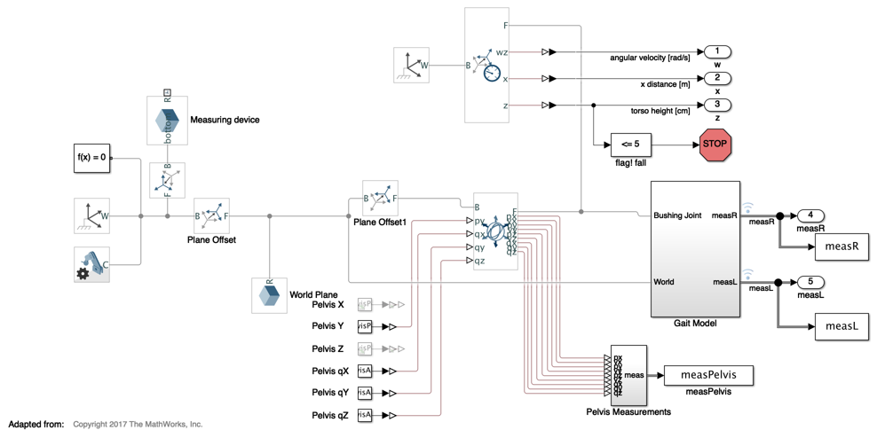

Contents
%Startup script for lumped parameter VSF model
Clear the things
clc clear close all
Add dependencies to the path
addpath(genpath('ModelingSimulation'), ... % Modeling and simulation files genpath('Optimization'), ... % Optimization files genpath('ControlDesign'), ... % Control design files genpath('ReinforcementLearning'), ... % Reinforcement learning files genpath('matlab scripts'), ... %Directory for matlab scripts and functions genpath('Subject Bone Geometry'), ... %Generic bone geometry files genpath('Experimental gait data'), ... %Folder with experimental gait data genpath('Libraries')); % Other dependencies
Model controls
GravityOn = 1; %1=on, 0=off...select zero for MTS simulation fulcrum_position = 66; %mm SubjMass = 79; %kg SubjHeight = 180; %cm ModelControl = 1; %1 = user-defined kinematics, 0 = default kinematics LLside = 1; %1 = R, 0 = L if isequal(ModelControl,1) if exist('subj1','var') else fname = uigetfile(); %Select experimental data structure subj1 = importdata(fname); end end
Parameterize model
if isequal(LLside,1) vsf_walker_params_R_BodyParts3D else vsf_walker_paramsL end % edit vsf_walker_params_R_BodyParts3D; %run to edit model parameters % edit vsf_walker_paramsL; %run to edit model parameters